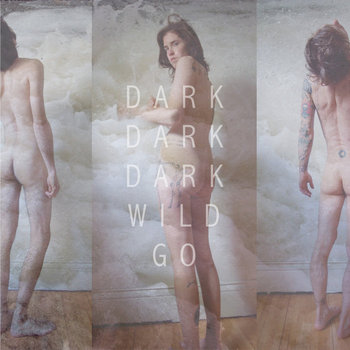
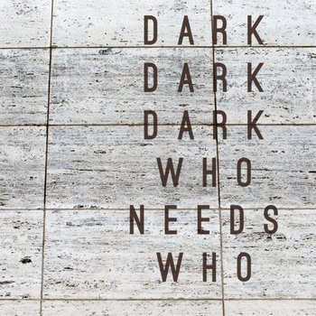
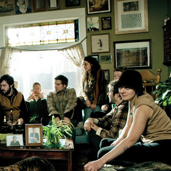

Dark Dark Dark's Top Albums
Wild Go

Fig.1 - Live and Rare recordings. (2018, January 15). Dark Dark Dark. https://darkdarkdark.bandcamp.com/album/.
Songs in the album:
- In Your Dreams
- Daydreaming
- Heavy Hearts
- Celebrate
- Nobody Knows
- Something For Myself
- Right Path
- Robert
- Say The Word
- Wild Go
Released October 5, 2010
Who Needs Who

Fig.2 - Who Needs Who. (2018, January 15). Dark Dark Dark. https://darkdarkdark.bandcamp.com/album/.
Songs in the album:
- Who Needs Who
- Tell Me
- Last Time I Saw Joe
- Patsy Cline
- Without You
- How It Went Down
- It's a Secret
- Hear Me
- Meet In The Dark
- The Great Mistake
Released October 2, 2012
Bright Brght Bright

Fig.3 - Bright Bright Bright. (2018, January 15). Dark Dark Dark. https://darkdarkdark.bandcamp.com/album/.
Songs in the album:
- Bright Bright Bright
- The Hand
- Something For Myself
- Make Time
- Flood
- Wild Goose Chase
Released March 9, 2010
Nona Invie has also went solo! See more information here.